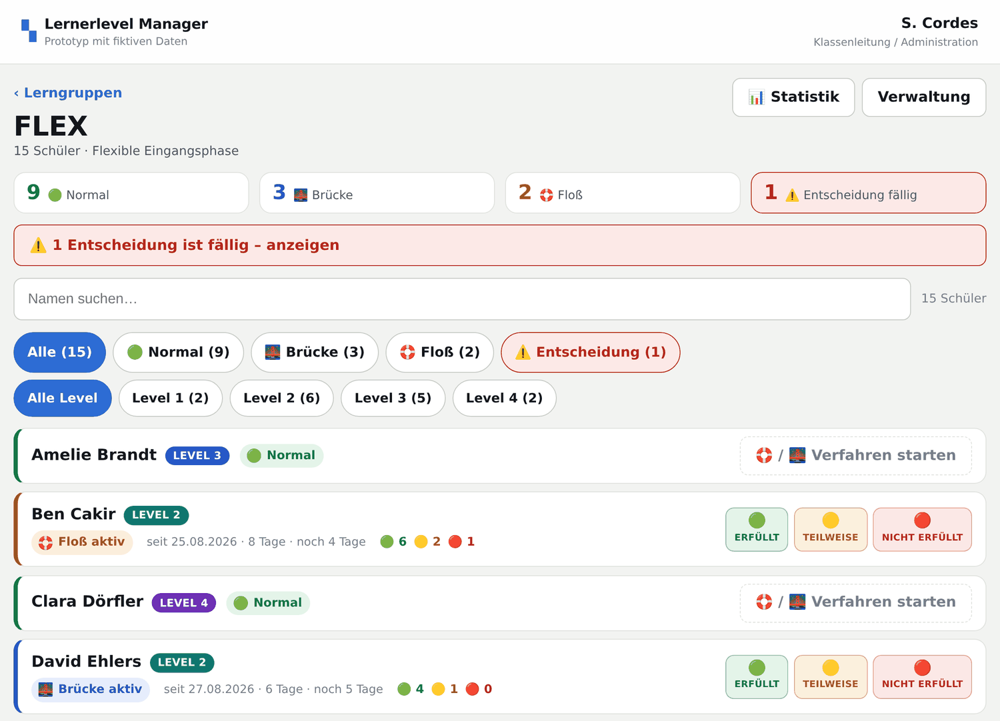
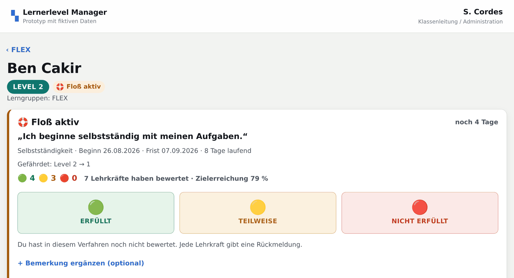
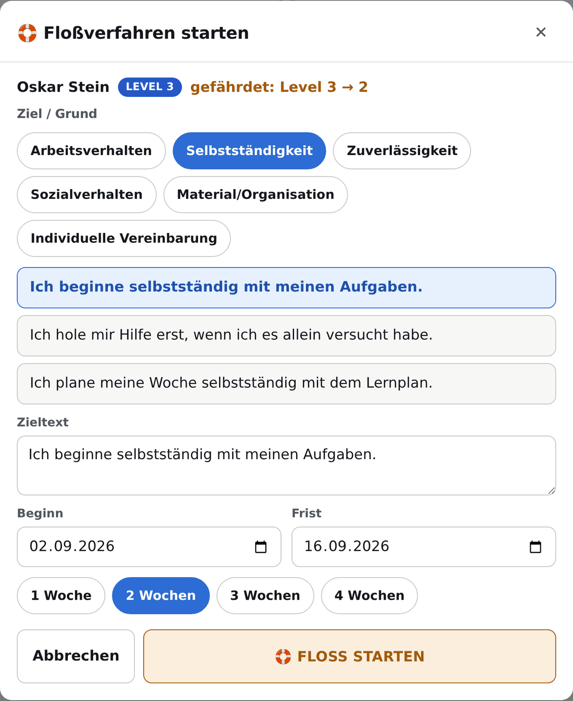

Anleitung für das Kollegium
Lernerlevel Manager
Lernerlevel, Floß und Brücke auf dem iPad · Stand September 2026
Die App macht das, was bisher die Karten gemacht haben: sie zeigt für jede Lerngruppe, wer auf welchem Level steht, wer gerade ein Floß oder eine Brücke laufen hat und wo eine Entscheidung ansteht. Zum Lesen brauchst du zehn Minuten, zum Bedienen zwei Tipps.
Testbetrieb. Die App läuft noch als Prototyp mit erfundenen Namen. Trag bitte keine echten Schülerdaten ein, solange die Datenschutzfreigabe nicht da ist. Alles, was du eingibst, bleibt auf deinem Gerät, wird also auch nicht bei mir sichtbar.
Auf dieser Seite
- Loslegen
- Der Alltag: Rückmeldung geben
- Schüler finden
- Das Schülerprofil
- Floß starten
- Brücke starten
- Wenn die Frist erreicht ist
- Historie und Korrekturen
- Statistik
- Verwaltung
- Wer darf was
- QR-Codes
- Deine Daten
- Häufige Fragen
- Spickzettel
Loslegen
Es gibt nichts zu installieren. Du öffnest die Adresse im Safari, tippst auf Teilen und legst sie über „Zum Home-Bildschirm“ ab. Danach startet die App wie jede andere, auch ohne Netz.
Oben rechts steht, als wer du gerade unterwegs bist. Im Prototyp kannst du dort das Konto wechseln und ausprobieren, was eine Lehrkraft sieht und was die Klassenleitung zusätzlich darf. Später steht an dieser Stelle die richtige Anmeldung.
Die Startseite zeigt deine Lerngruppen als Kacheln. Auf jeder Kachel stehen schon die Zahlen, die vor dem Öffnen interessieren: wie viele Schüler, wie viele Brücken, wie viele Flöße und wie viele Entscheidungen anstehen. Eine Kachel mit rotem Rand heißt: da wartet etwas auf dich.
Oben die Zusammenfassung, darunter alle Schüler der Gruppe. Wer ein laufendes Verfahren hat, bekommt eine ausführlichere Zeile mit Beginn, Frist und den bisherigen Rückmeldungen. Wer normal läuft, steht in einer schmalen Zeile.
Der Alltag: Rückmeldung geben
Das ist die Handlung, die du hundertmal machst, und sie ist der Grund für den ganzen Aufbau der App:
Lerngruppe öffnen → Schüler in der Liste finden → 🟢, 🟡 oder 🔴 antippen.
Fertig. Kein Öffnen des Profils, keine Rückfrage, kein Speichern-Knopf. Die Zeile blitzt kurz auf, die Zahlen oben aktualisieren sich, und unten erscheint für ein paar Sekunden ein Hinweis mit „Rückgängig“. Wenn du daneben getippt hast, tippst du dort drauf und es ist weg.

Gespeichert werden Schüler, Datum, Uhrzeit, Bewertung und dein Name. Eine Bemerkung kannst du ergänzen, musst du aber nie. Im Profil gibt es dafür ein Feld unter den großen Knöpfen.
Die Knöpfe erscheinen nur bei Schülern mit laufendem Floß oder laufender Brücke. Bei allen anderen steht an der Stelle „Verfahren starten“.
Schüler finden
Über der Liste liegen zwei Reihen Filter. Die obere filtert nach Status: Alle, Normal, 🌉 Brücke, 🛟 Floß, ⚠️ Entscheidung. Die untere nach Level 1 bis 4. Beide lassen sich kombinieren, ein zweiter Tipp auf denselben Filter hebt ihn wieder auf. Daneben liegt die Suche, die auf Vor- und Nachnamen reagiert.
Wenn eine Entscheidung fällig ist, erscheint über der Liste ein roter Balken. Ein Tipp darauf filtert direkt auf die betroffenen Schüler.
Das Schülerprofil
Ein Tipp auf den Namen öffnet das Profil. Oben stehen Level und Status, darunter das laufende Verfahren mit Ziel, Beginn, Frist und Bilanz. Dann kommen die drei großen Knöpfe, die dasselbe tun wie die kleinen in der Liste, nur mit Platz für eine Bemerkung.

Unter „Rückmeldungen dieses Verfahrens“ klappst du auf, was bisher zusammengekommen ist, mit Datum, Uhrzeit und Kürzel. Ganz unten steht die Historie.
Floß starten
Ein Floß heißt: Der Schüler steht kurz vor einem Levelabstieg. Du startest es im Profil über „🛟 FLOSS STARTEN“ oder direkt aus der Liste über „Verfahren starten“.
Die App zeigt dir das aktuelle Level und was gefährdet ist, etwa „Level 3 → 2“. Dann wählst du eine Kategorie: Arbeitsverhalten, Selbstständigkeit, Zuverlässigkeit, Sozialverhalten, Material/Organisation oder individuelle Vereinbarung. Zu jeder Kategorie stehen fertige Zielsätze bereit. Einer davon reicht meistens, du kannst aber jederzeit eigenen Text schreiben.

Der Beginn steht auf heute, die Frist auf zwei Wochen. Beides ist frei änderbar, für die Frist gibt es die Schnellwahl 1, 2, 3 oder 4 Wochen. Nach dem Start taucht der Schüler sofort mit „Floß aktiv“ im Dashboard auf.
Bei Level 1 ist der Knopf grau. Tiefer geht es nicht, deshalb gibt es dort kein Floß.
Brücke starten
Eine Brücke heißt: Der Schüler steht kurz vor einem Levelaufstieg. Der Ablauf ist derselbe wie beim Floß, die App zeigt statt der Gefährdung den möglichen Aufstieg, etwa „Level 2 → 3“. Bei Level 4 ist der Knopf grau, weil es darüber nichts mehr gibt.
Wenn die Frist erreicht ist
Am Tag der Frist wechselt der Schüler automatisch auf „⚠️ Entscheidung fällig“. Das musst du nicht anstoßen und kannst es auch nicht verpassen: Der Status rechnet sich aus der Frist und dem heutigen Datum, er steht also auch dann da, wenn zwei Wochen niemand die App geöffnet hat.
Entschieden wird von der Klassenleitung, im Profil oder über den Knopf in der Liste:
- Bei einer Brücke: ⬆️ Levelaufstieg oder ↩️ Level beibehalten.
- Bei einem Floß: ✅ Level gehalten oder ⬇️ Levelabstieg.
Vor dem Abschluss zeigt die App die Bilanz der Rückmeldungen und fragt einmal nach. Beim Levelwechsel setzt sie danach das neue Level und schiebt das Verfahren in die Historie.
Historie und Korrekturen
Jeder Schüler hat eine Historie, in der jeder Start, jede Rückmeldung, jeder Abschluss und jeder Levelwechsel mit Datum, Uhrzeit und Person steht. Diese Liste wird nie überschrieben.
Falsche Einträge löscht die App deshalb nicht. Die Klassenleitung tippt in der Rückmeldungsliste auf „korrigieren“, gibt einen Grund an und nimmt den Eintrag damit zurück. Der alte Eintrag bleibt durchgestrichen stehen, die Korrektur kommt als eigener Eintrag dazu. Das ist Absicht: Wenn wir mit den Daten später ein Gespräch mit Eltern führen, muss nachvollziehbar sein, was wann passiert ist.
Statistik
Der Knopf „Statistik“ im Dashboard klappt eine kurze Übersicht auf: Levelverteilung der Lerngruppe als Balken und die Zahl der laufenden Brücken, Flöße und fälligen Entscheidungen. Mehr nicht, weil mehr im Alltag niemand liest.
Verwaltung
Die Verwaltung ist der Klassenleitung vorbehalten. Dort legst du Schüler und Lerngruppen an, bearbeitest sie, ordnest Schüler mehreren Lerngruppen zu und setzt das aktuelle Level.
Ein Schüler hat dabei immer nur einen Datensatz, auch wenn er in FLEX und in der 7a steht. Wer die Lerngruppe wechselt, nimmt seine Historie mit. Wer die Schule verlässt, wird archiviert statt gelöscht, damit laufende und alte Verfahren nachvollziehbar bleiben.
Unter „Daten“ liegen der Export als JSON-Datei, das Zurücksetzen auf die Demodaten und das Löschen. Unter „Protokoll“ steht, wer wann was geändert hat.
Wer darf was
| Handlung | Lehrkraft | Klassenleitung |
|---|---|---|
| Eigene Lerngruppen und Schüler ansehen | ja | ja, alle |
| 🟢 🟡 🔴 Rückmeldung geben | ja | ja |
| Floß oder Brücke starten | ja | ja |
| Historie ansehen | ja | ja |
| Verfahren abschließen, Level ändern | nein | ja |
| Rückmeldungen korrigieren | nur die eigene, direkt danach über „Rückgängig“ | ja, mit Begründung |
| Schüler und Lerngruppen verwalten, Protokoll lesen | nein | ja |
QR-Codes
Geplant ist ein Aufkleber pro Schüler, den du scannst, statt in der Liste zu suchen. Jeder Schüler hat dafür schon eine feste Zufallsnummer, die sich nie ändert, auch nicht beim Levelwechsel. Ein einmal gedruckter Code bleibt also gültig.
Im Code steht nur eine Internetadresse mit dieser Nummer. Kein Name, kein Level, kein Status, keine Klasse. Wer den Aufkleber findet und scannt, landet bei der Anmeldung und sieht ohne Berechtigung nichts. Die Grafik selbst fehlt noch, im Profil steht bisher nur die Adresse.
Deine Daten
Im Prototyp speichert die App ausschließlich im Browser des Geräts, auf dem du sie benutzt. Es gibt keinen Server und kein Konto. Das heißt auch: Deine Eingaben tauchen auf keinem zweiten iPad auf, und wenn du die Websitedaten in Safari löschst, sind sie weg.
Für den echten Betrieb braucht es einen Server in Deutschland, eine Anmeldung und die Freigabe durch Schulleitung und Datenschutzbeauftragte. Es geht um Verhaltensbewertungen von Minderjährigen, das klären wir vorher und nicht nebenbei. Bis dahin gilt der Kasten ganz oben: erfundene Namen zum Ausprobieren.
Was die App bewusst nicht speichert: Geburtsdatum, Adresse, Noten, Fehlzeiten. Sie braucht Name, Level, Lerngruppe, Ziel, Frist und die Rückmeldungen.
Häufige Fragen
Ich habe bei der falschen Person getippt.
Solange der Hinweis unten noch steht, auf „Rückgängig“ tippen. Danach macht es die Klassenleitung im Profil über „korrigieren“.
Muss ich jeden Tag eine Rückmeldung geben?
Nein. Die App zählt, was da ist, und rechnet daraus die Quote. Eine Lücke ist keine schlechte Bewertung.
Kann ich zwei Verfahren gleichzeitig laufen lassen?
Nein, pro Schüler läuft ein Verfahren. Ein zweites Ziel nebenher würde die Entscheidung am Ende nur unklar machen.
Was passiert, wenn ich die Frist überziehe?
Nichts Schlimmes. Der Schüler steht weiter auf „Entscheidung fällig“, und in der Zeile steht, seit wann. Rückmeldungen kannst du weiter geben.
Warum sehe ich die 7b nicht?
Weil dir nur deine eigenen Lerngruppen zugeordnet sind. Die Klassenleitung sieht alle.
Funktioniert das auch am Rechner?
Ja, die App läuft in jedem Browser. Gebaut ist sie für das iPad im Hoch- und im Querformat.
Spickzettel
- Rückmeldung geben: Lerngruppe öffnen, Schüler finden, 🟢 / 🟡 / 🔴 antippen.
- Vertippt: im Hinweis unten auf „Rückgängig“ tippen.
- Verfahren starten: Schüler öffnen, 🛟 oder 🌉 wählen, Ziel antippen, Frist antippen, starten.
- Entscheidung fällig: roter Balken über der Liste, entschieden wird von der Klassenleitung.
- Suchen: Filterreihen für Status und Level, Suchfeld für Namen.
- Testbetrieb: nur erfundene Namen eintragen.
Rückmeldung an mich
Probier die App in Ruhe aus und sag mir, wo du hängen bleibst. Am meisten hilft mir: An welcher Stelle hast du gesucht, statt zu tippen? Was fehlt dir im Unterricht wirklich? Wenn etwas zu viele Schritte braucht, ist das ein Fehler der App und nicht deiner.